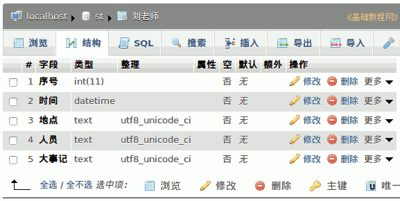

2012-2013 第一学期八年级电子表格教学设计
作者：TeliuTe 来源：基础教程网
二十五、学会编辑数据表 返回目录 下一课
（一）教学设计
1、学习目标：学会编辑数据表
2、注意事项：找到菜单，按步骤操作
3、教学过程：
1）教师准备学案和板书；
2）学生整队进入，开机抄黑板上笔记；
3）教师讲解板书演示操作；
4）学生打指法、日志、完成操作；
5）教师打勾记录学生指法成绩，检查日志和操作；
注：学生抄完笔记就开始打指法、日志，老师讲完后再继续完成；
（二）板书设计(学生笔记)
2012-12-15 第25课 复习课
1.盲打一篇执法
2.按词语输入日至
3.登陆数据库数据表
4.插入一条记录“我的冬季长跑”
5.语句通顺50-100
2012-12-22
第25课 学会编辑数据表
1、登录数据库，数据表，找到上边的“结构”
2、点击“结构”，添加 1 字段于表头，执行
3、字段名称“序号”类型不变，整理utf8
4、保存，返回表，点铅笔，依次修改
5、插入第三条记录”
操作图示：

（三）课后记
--
下午冬季长跑，另外三个班上不成
这节课复习一下，4班居然没占课
--
来了照着黑板上做，还是原来的一样
只是内容少了一些，学生把打印预览忘记的多
--
平时老是问老师的同学，这次反而最快了
看来不是不会，是没有发挥出来，养成习惯就好了
--
有几个把记录当日志打了，上学期写日志写短文写习惯了
几个来回跑的，一个一戒尺，后面不跑了
--
两个爱抄的，披头盖脸训了一顿
不用管学生的回答，只管训完好了
--
后面的课有些乱了，经常占课
或者是其他活动也刚好在周六
--
添加字段，注意理解表格的形状
添加后是什么样的，给个直观的例子也了
--
返回目录 下一课
本教程由86团学校TeliuTe制作|著作权所有
基础教程网：http://teliute.org/
美丽的校园……
转载和引用本站内容，请保留版权信息和本站链接。